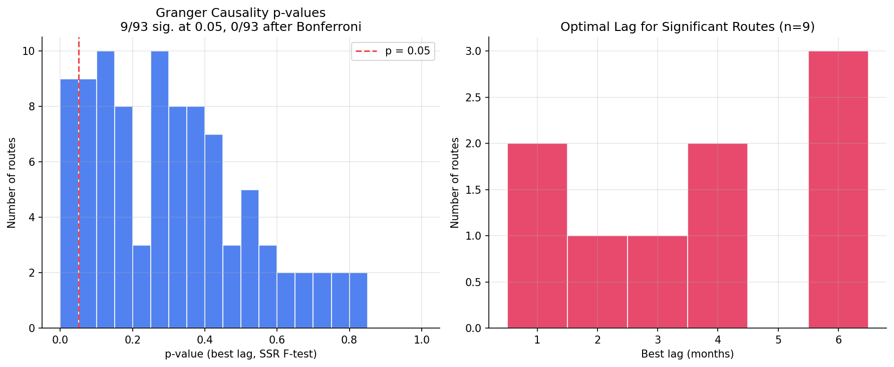
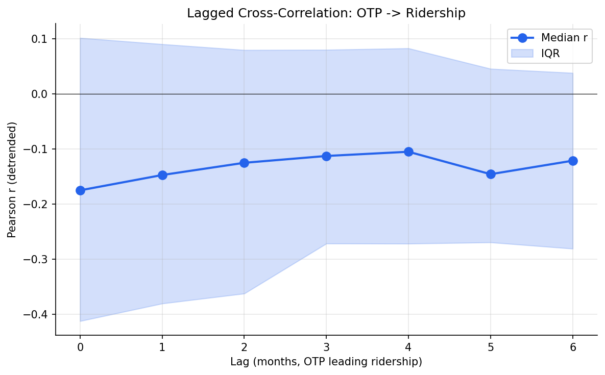

Analysis
20 - OTP → Ridership Causality
Ridership and External Factors
Coverage: 2017-01 to 2025-11 (from otp_monthly, ridership_monthly).
Built 2026-04-03 19:51 UTC · Commit ebbab23
Page Navigation
Analysis Navigation
Data Provenance
flowchart LR
20_otp_ridership_causality(["20 - OTP → Ridership Causality"])
t_otp_monthly[("otp_monthly")] --> 20_otp_ridership_causality
01_data_ingestion[["Data Ingestion"]] --> t_otp_monthly
u1_01_data_ingestion[/"data/routes_by_month.csv"/] --> 01_data_ingestion
u2_01_data_ingestion[/"data/PRT_Current_Routes_Full_System_de0e48fcbed24ebc8b0d933e47b56682.csv"/] --> 01_data_ingestion
u3_01_data_ingestion[/"data/Transit_stops_(current)_by_route_e040ee029227468ebf9d217402a82fa9.csv"/] --> 01_data_ingestion
u4_01_data_ingestion[/"data/PRT_Stop_Reference_Lookup_Table.csv"/] --> 01_data_ingestion
u5_01_data_ingestion[/"data/average-ridership/12bb84ed-397e-435c-8d1b-8ce543108698.csv"/] --> 01_data_ingestion
t_ridership_monthly[("ridership_monthly")] --> 20_otp_ridership_causality
01_data_ingestion[["Data Ingestion"]] --> t_ridership_monthly
d1_20_otp_ridership_causality(("numpy (lib)")) --> 20_otp_ridership_causality
d2_20_otp_ridership_causality(("polars (lib)")) --> 20_otp_ridership_causality
d3_20_otp_ridership_causality(("scipy (lib)")) --> 20_otp_ridership_causality
d4_20_otp_ridership_causality(("statsmodels (lib)")) --> 20_otp_ridership_causality
classDef page fill:#dbeafe,stroke:#1d4ed8,color:#1e3a8a,stroke-width:2px;
classDef table fill:#ecfeff,stroke:#0e7490,color:#164e63;
classDef dep fill:#fff7ed,stroke:#c2410c,color:#7c2d12,stroke-dasharray: 4 2;
classDef file fill:#eef2ff,stroke:#6366f1,color:#3730a3;
classDef api fill:#f0fdf4,stroke:#16a34a,color:#14532d;
classDef pipeline fill:#f5f3ff,stroke:#7c3aed,color:#4c1d95;
class 20_otp_ridership_causality page;
class t_otp_monthly,t_ridership_monthly table;
class d1_20_otp_ridership_causality,d2_20_otp_ridership_causality,d3_20_otp_ridership_causality,d4_20_otp_ridership_causality dep;
class u1_01_data_ingestion,u2_01_data_ingestion,u3_01_data_ingestion,u4_01_data_ingestion,u5_01_data_ingestion file;
class 01_data_ingestion pipeline;
Findings
Findings: OTP -> Ridership Causality
Summary
There is no evidence that OTP declines predict subsequent ridership losses. After detrending and Bonferroni correction, zero of 93 routes show statistically significant Granger causality from OTP to ridership. The raw cross-correlations are weakly negative, suggesting the opposite direction: months with lower ridership tend to have better OTP.
Key Numbers
- Granger causality: 8/93 routes significant at p < 0.05 uncorrected; 0/93 after Bonferroni correction
- Median cross-correlation at lag 0: r = -0.18 (IQR: [-0.41, +0.10])
- Median cross-correlation at lag 1: r = -0.15 (IQR: [-0.38, +0.09])
- Cross-correlations are flat across lags 0--6 -- no dominant lag emerges
- 93 routes with 36+ months of paired OTP + ridership data (57--70 months each)
- Both series detrended by subtracting system-wide monthly mean before testing
- ADF stationarity test applied per route; routes with non-stationary detrended series are first-differenced before Granger testing to avoid spurious regression
Observations
- The p-value histogram is roughly uniform (with a small pile-up near zero), consistent with the null hypothesis being true for most routes.
- Of the 8 nominally significant routes, 3 have best lag = 1 month and the rest are scattered across lags 2--6. No consistent lag structure emerges.
- The weakly negative contemporaneous correlation (median r = -0.18) is consistent with reverse causality: months when fewer people ride (summer, holidays) see better OTP because of reduced dwell times and less crowding, not because good OTP attracts riders.
Discussion
The hypothesis that poor OTP drives riders away is intuitive, but this data cannot confirm it. Several factors may explain the null result:
- Temporal resolution is too coarse: monthly data may be too slow to capture rider responses, which could operate at the trip or week level.
- Riders have limited alternatives: in a single-provider transit system, riders may tolerate poor OTP because they have no substitute, especially for commute trips.
- Confounders dominate: ridership is driven primarily by employment, gas prices, weather, and COVID -- factors far larger than OTP fluctuations. The detrending removes system-wide trends but not route-specific confounders.
- Reverse causality may mask the effect: if high ridership causes poor OTP (crowding, dwell times) while poor OTP also causes ridership loss, the two effects partially cancel.
Caveats
- Granger causality tests linear predictive ability, not true causation. A null result does not prove OTP has no effect on ridership.
- The 70-month overlap period with monthly granularity gives limited statistical power for 6-lag models (effective sample ~60 per route).
- Detrending removes system-wide trends but not route-specific shocks (e.g., service changes, construction).
- Bonferroni correction is conservative; a less strict correction (e.g., Benjamini-Hochberg) might yield a few significant routes, but the overall pattern would remain weak.
Review History
- 2026-02-27: RED-TEAM-REPORTS/2026-02-27-analyses-19-25.md — 1 significant issue. Added ADF stationarity tests; non-stationary routes are first-differenced before Granger testing. Null result confirmed as robust.
Output

histogram of p-values across routes.

median cross-correlation by lag with IQR band.
No interactive outputs declared.
per-route Granger test results (F-stat, p-value, optimal lag).
Preview CSV
Per-route lagged OTP-to-ridership cross-correlation values across tested lags.
Preview CSV
Methods
Methods: OTP → Ridership Causality
Question
Does a decline in on-time performance predict subsequent ridership losses? If so, at what lag and magnitude?
Approach
- Join monthly OTP with monthly weekday ridership by route and month over the overlap period.
- For each route, compute lagged cross-correlations between OTP and ridership at lags of 1--6 months (OTP leading ridership).
- Aggregate cross-correlations across routes (median and IQR) to identify the dominant lag.
- Run Granger causality tests (statsmodels) on routes with sufficient data (36+ months), testing whether lagged OTP improves ridership prediction beyond ridership's own autoregressive trend.
- Control for system-wide trends by detrending both series (subtract system monthly mean) before testing.
- Check stationarity of each route's detrended series using the Augmented Dickey-Fuller (ADF) test. For routes where either series is non-stationary (ADF p >= 0.05), first-difference both series before Granger testing to avoid spurious regression.
- Report the share of routes where Granger causality is significant at p < 0.05, with Bonferroni correction.
Data
| Name | Description | Source |
|---|---|---|
otp_monthly |
route_id, month, OTP | prt.db table |
ridership_monthly |
route_id, month, day_type='WEEKDAY', avg_riders | prt.db table |
Notes: Join on route_id and month; overlap period only (Jan 2019 -- Oct 2024). Exclude routes with fewer than 36 months of paired data.
Output
Source Code
|
Sources
| Name | Type | Why It Matters | Owner | Freshness | Caveat |
|---|---|---|---|---|---|
| otp_monthly | table | Primary analytical table used in this page's computations. | Produced by Data Ingestion. | Updated when the producing pipeline step is rerun. | Coverage depends on upstream source availability and ETL assumptions. |
Upstream sources (5)
|
|||||
| ridership_monthly | table | Primary analytical table used in this page's computations. | Produced by Data Ingestion. | Updated when the producing pipeline step is rerun. | Coverage depends on upstream source availability and ETL assumptions. |
Upstream sources (5)
|
|||||
| numpy | dependency | Runtime dependency required for this page's pipeline or analysis code. | Open-source Python ecosystem maintainers. | Version pinned by project environment until dependency updates are applied. | Library updates may change behavior or defaults. |
| polars | dependency | Runtime dependency required for this page's pipeline or analysis code. | Open-source Python ecosystem maintainers. | Version pinned by project environment until dependency updates are applied. | Library updates may change behavior or defaults. |
| scipy | dependency | Runtime dependency required for this page's pipeline or analysis code. | Open-source Python ecosystem maintainers. | Version pinned by project environment until dependency updates are applied. | Library updates may change behavior or defaults. |
| statsmodels | dependency | Runtime dependency required for this page's pipeline or analysis code. | Open-source Python ecosystem maintainers. | Version pinned by project environment until dependency updates are applied. | Library updates may change behavior or defaults. |